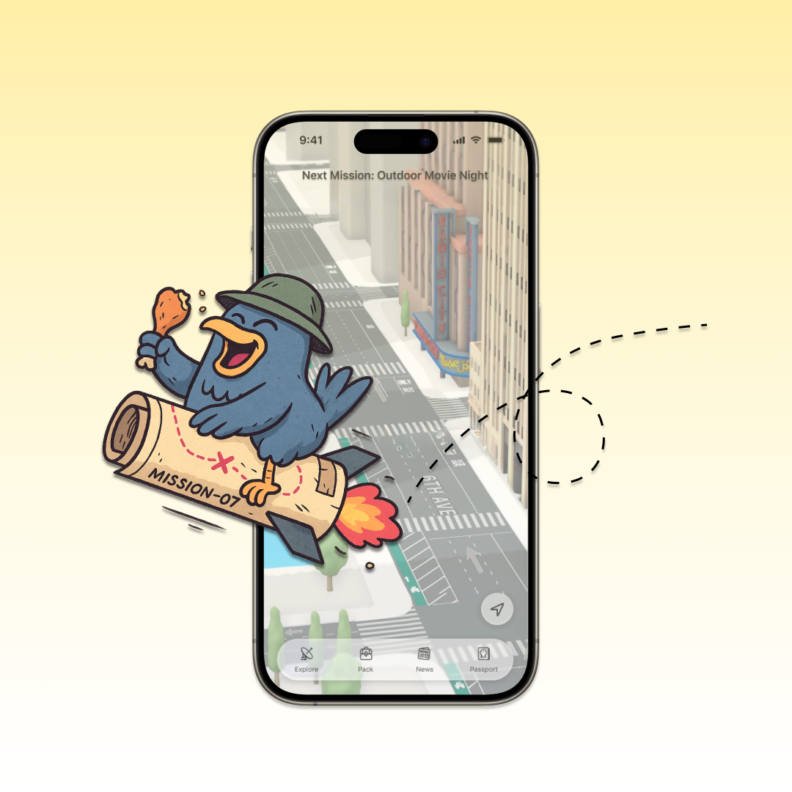
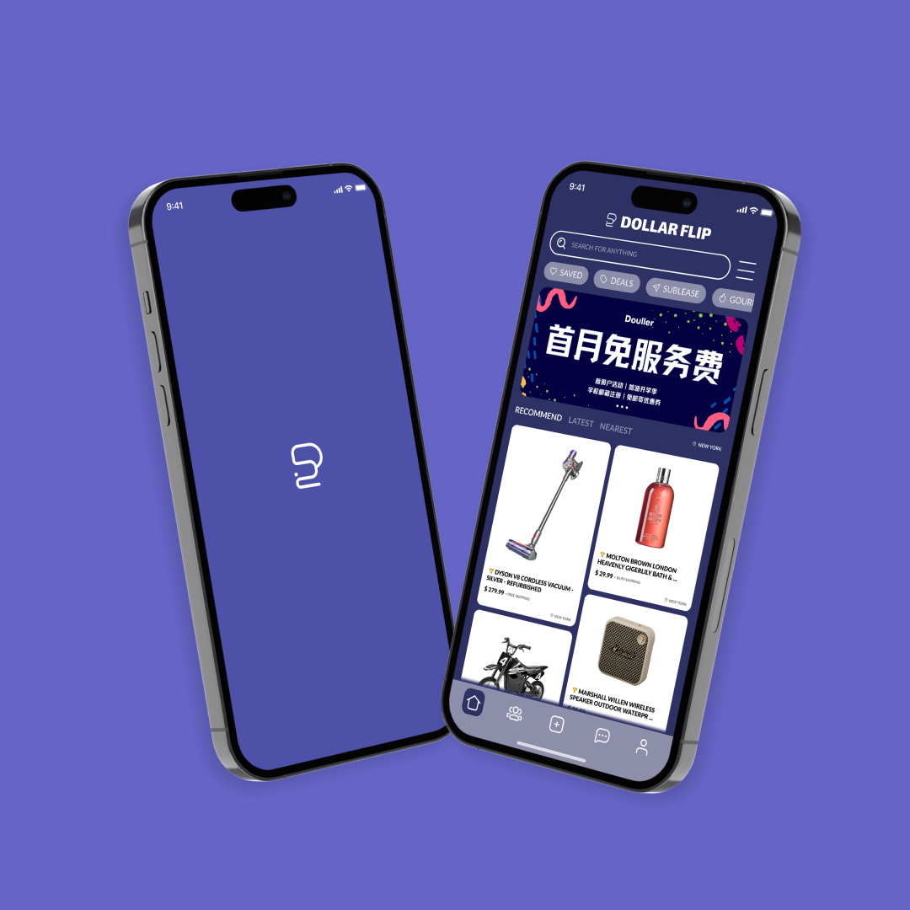
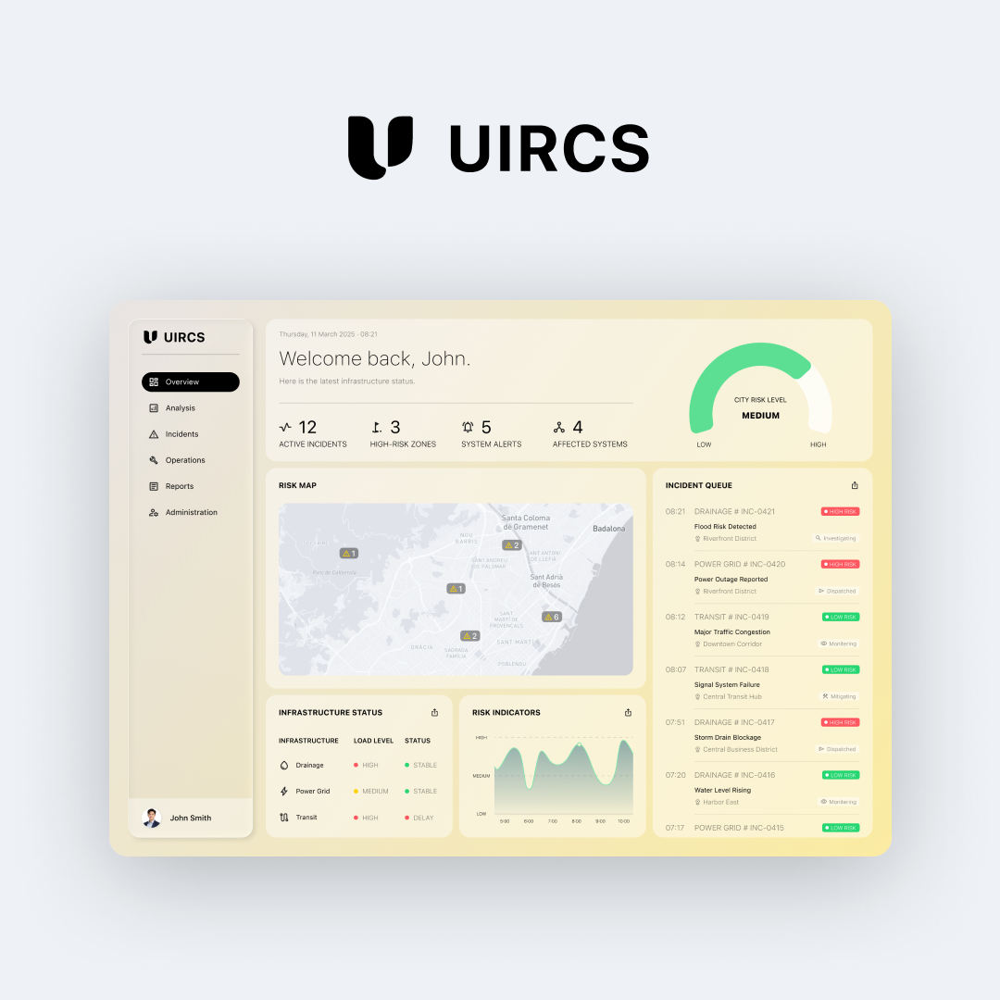

A creative designer and multidisciplinary artist exploring the intersections of art, science, and technology.

Turning open-ended city exploration into confident real-world action.

Designing AI-assisted decisions for a second-hand marketplace.

Coordinating infrastructure risk through one operational system.